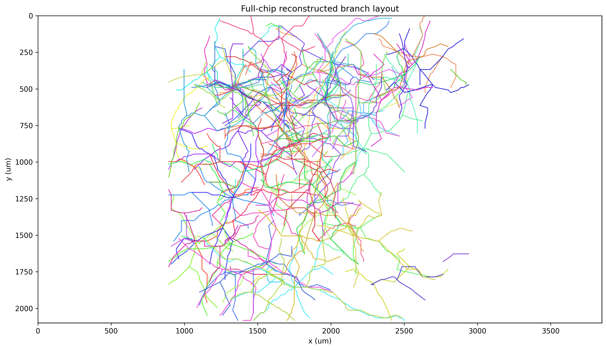

Reconstructed chip — 176 axons, one well
Each colored arbor is one post-merge unit's reconstruction. Soma marked, branches traced via axon_velocity_gtrs. DIV 36 reference well, M08073 80 k DMEM.

Engineering note: this single PNG is the canonical "did the pipeline succeed end-to-end?" diagnostic for a well. Generated by the
plot_full_chip_layout phase in the recon stage. It will move to the analysis stage in chip_layout_phase_split_plan and split into a (white-bg timeline grid) + (black-bg per-session detail) pair.
The 176 templates — grid view